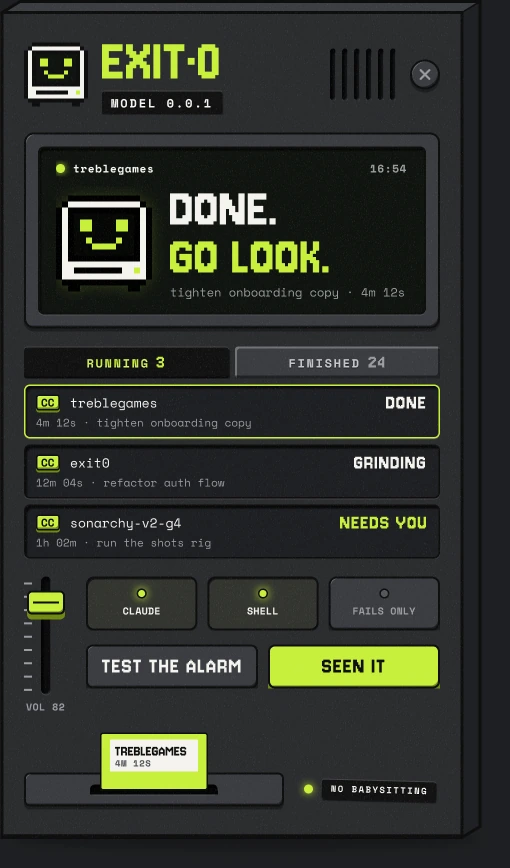
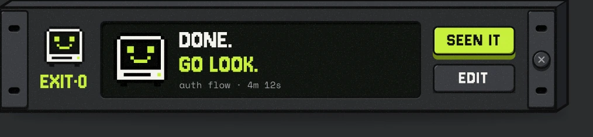
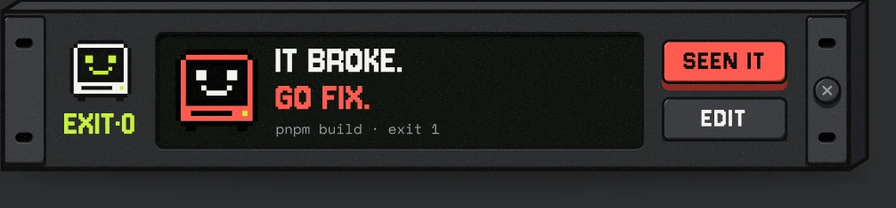
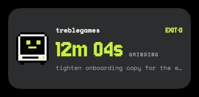
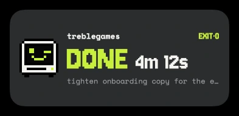
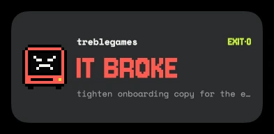

The terminal doesn't tap you on the shoulder
I give Claude Code a job, switch to Figma, and come back to find it finished twenty minutes ago. Or worse, it's been sitting on a permission question the whole time, waiting for me.
So I wanted something that would tell me: on the desk when I'm there, on my phone when I'm not. My first go was in Replit, and I ran out of credits. I started again as a native Mac and iPhone app, with Claude Code doing the building and me doing everything else.
Four moments that matter, two places I might be
A run ending isn't one event. Finished, stuck on a question, broken, or crashed on Claude's side all need different amounts of my attention. And a plain notification is the easiest thing in the world to ignore.
How do you get someone's attention at the right moment without adding to the noise?
One file of rules, six milestones, zero lines by hand
I'm a designer, not a Swift developer. So I didn't try to own the code. I owned the decisions and the checks. The project has a CLAUDE.md file that Claude Code reads at the start of every session, and it sets out who does what:
$ cat CLAUDE.md
Richard is the product manager and designer.
He is not a developer.
Explain every decision in plain English, no jargon.
Only ask me about product, design or copy.
One question at a time.
Click-by-click steps when I have to do something.
Build in milestone order. Don't start the next until I've tried the last.
Never hand Richard a build you haven't built.
Each milestone, from setup to polish, ended with checks I could do myself, in plain English. Things like: quit Exit·0, run Claude again, and when the run finishes Exit·0 should start by itself and the banner should still appear. Nothing moved on until I'd ticked them off.
Design, testing, judgement
Six rounds in Figma, testing every milestone, the clicks only I could do (developer account, push key, permissions) and the product calls, each logged with a date.
Everything else
The Swift for both apps, tests, builds, and a decision log. When the idle app was using 8 to 12% of my iMac's CPU, it profiled it, found three causes and got it to about 2.5%.
If I own the decisions and the checks, I don't need to own the code.
A thing on the desk, not another notification
Exit·0 is a small dark pixel machine with a screen, a run list and a floppy drive. A white CRT mascot has a face for every state. When a run finishes, it hops, and a floppy drops out of the drive labelled with the project and how long it took.
The copy has written rules, enforced by a test in the code: real numbers over adjectives, no fake urgency, name failures plainly, and no em dashes anywhere.



The compact strip floats above every window and never takes focus.



Away from the desk, the phone gets a push and a lock screen card that counts the run up and flips to the result.
Hooks in, pushes out, no accounts
Claude Code has hooks: small commands it runs at moments like "a run started" or "I need permission". Exit·0 installs its own in one click, and they never make Claude wait.
The Mac and phone find each other through your own iCloud, so there's no sign-up and no pairing code. Your prompt text never leaves the Mac, only a 40-character title. No analytics. Turn the hooks off and Exit·0 removes only its own entries, and keeps a dated backup of your settings.
The first version sent pushes with my personal Apple key, which only works for me. To let anyone else use it, I added a small push relay on Vercel, so testers' Macs can reach their phones without an Apple developer account.
The calls came from using it, not looking at it
One run list, not two
The Mac and phone lists looked the same but held different things. Now the Mac owns one list and the phone mirrors it.
Write lengths like a terminal
4:12 reads like a time of day. Run lengths are now written the way a developer reads them. Finish times stay as clock times.
Dim what does nothing
The SEEN IT key was always lit, so pressing it with nothing on screen did nothing. It now dims until there's something to acknowledge.
Broke means the run gave up
Claude runs failing commands all the time and carries on. A run only counts as Broke if it stops within two minutes of a failure.
The test push was slow
The Mac only checked iCloud every 15 minutes. Now 15 seconds, and setup asks "is the Mac awake?" after 45.
The phone lost its background
One layer painted flat black over the chassis grey. Fixed, with proper gutters on bigger phones.
It broke on an empty search
Not a code bug. The rule was wrong, which is how decision 04 happened.
The full build log, with every round and fault, is on exit0.buzz/how-it-was-made.
Done
- Mac app 1.0.2, notarised and free to download
- iPhone app in public beta on TestFlight
- Push relay live, so it works for people who aren't me
- exit0.buzz with setup notes and a privacy page
- It does its job for me on every run, every day
Not done
- An audience. Launch posts on LinkedIn, X and Instagram reached a small following
- Now posting where Claude Code users actually are: Reddit and developer communities
- The failure log on the phone
- Whatever the first testers tell me to turn off
Run it for a week, then tell me what you turned off.
Not what you liked. What you muted, set to fails only, hid or stopped looking at. That's where the design is wrong, and it's the feedback I can't get from using it myself.
Exit·0 works with Claude Code. Claude and Claude Code are trademarks of Anthropic, PBC. Exit·0 is an independent project and isn't affiliated with or endorsed by Anthropic.